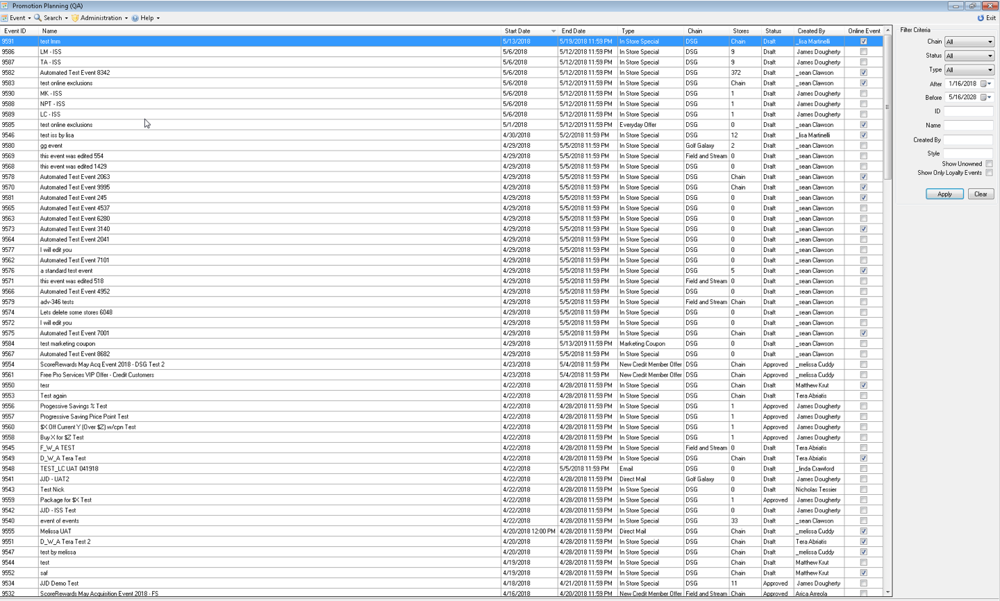

The Promotion Planning System (PPS) has been through the ages at DICK'S Sporting Goods. A home-grown system originally built as a .NET Console application has been currently getting a much needed face lift.
My role for the Promotion Planning System re-write was to turn an idea into a product. From branding to web design and development, I was heavily involved in each step of the way.
Current PPSWin Event Search Page ...
Initial PPSWeb mockup ...

Initial PPSWeb mockup for Event Search filters ...

Sketching out some ideas for a new logo and favicon ...

A glimpse of a new design has reared its head! The first prototype of the PPSWeb Event Search page ...

Mocking up a simple, cleaner, more efficient Promo Detail Page ...

Creating a better user experience with a "Loading" snackbar. After reviewing our test group feedback, this feature provides awareness to the user while waiting for data to populate ...

Saving a modification using the "Save" button (before receiving process flow feedback) ...

Improving on the user's experience with inline-updates after gathering process flow feedback to enhance the workflow of saving data ...

When working through a problem, sometimes you just need to Post It ...